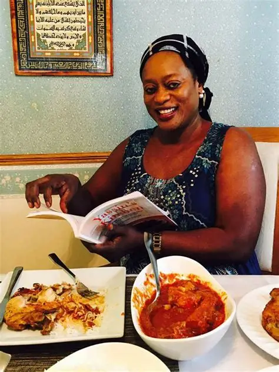

Our Story
From my grandmother's kitchen to your table, every dish is prepared with love, tradition, and the freshest ingredients. We bring you the rich, bold, and vibrant tastes of West African cuisine - from creamy Domoda and fragrant Benachin to zesty Chicken Yassa.
At Mama Njie's, you're not just a customer - you're family. Come taste the warmth, culture, and soul of The Gambia in every bite.
Meet Mama Njie
With 13 years of dedicated experience in the kitchen, Mama Njie has perfected the art of traditional Gambian cooking. Her passion for authentic flavors and commitment to quality has made Mama Njie's Restaurant a beloved destination for those seeking genuine West African cuisine.
